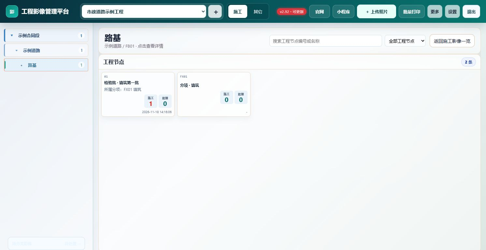

工程资料分开管理
不同工程分别保存项目划分、照片、成员与设置，减少资料混放。
施工 · 监理 · 工程资料
按工程整理现场影像，完成照片上传、分类、水印、打印与导出。电脑端集中管理，现场端配合采集。
适用于 Windows 10 / 11 · 本机管理工程资料
工程影像工作流
选择专业、建立项目划分，先明确照片属于哪个工程。
现场采集或电脑上传，对照预览完成匹配。
检查分类、部位和照片信息，处理待分类照片。
按需要打印照片、导出统计或归档资料。
新版桌面端示例
市政示例工程按分项与检验批显示照片归属。

产品能力
不同工程分别保存项目划分、照片、成员与设置，减少资料混放。
按工程层级和工序整理影像，处理待分类照片，核对照片归属。
按分类打印、导出统计；市政照片组可导出目录、原片、清单与预检报告。
快速开始